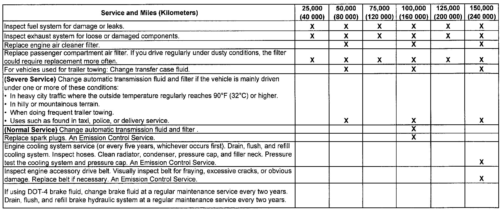

Operation CHARM
: Car repair manuals for everyone.
Home
>>
Cadillac
>>
2008
>>
SRX AWD V8-4.6L
>>
Repair and Diagnosis
>>
Maintenance
>>
Service Intervals
>>
Condition/Indicator Based Maintenance Services
>>
Additional Required Services
Additional Required Services
ADDITIONAL REQUIRED SERVICES

The following services should be performed at the first
maintenance
service (I or II) after the indicated miles (kilometers) shown for each item.